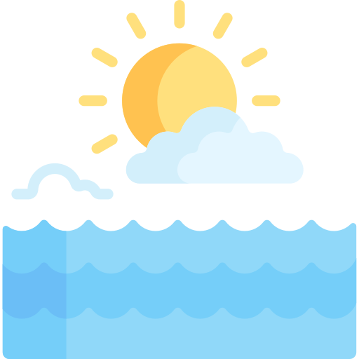
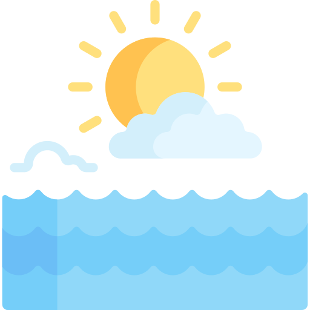

I'm George.
a programmer.


Working as a database administrator since 2016, I dived into software development world in 2020 to widen my horizons and realised throughout my studies that it was the right career path for me. My previous experience helped me being a team player, easily adapting to new environments, result oriented and always seeking to expand my knowledge. Looking forward to meeting my new colleagues and start creating together.

•C# •ASP.NET MVC •Entity Framework •HTML •CSS •Bootstrap •Visual Studio •Visual Studio Code •SSMS •Teams •JavaScript •Angular •ReactJS •Postman •GitHub •JQuery •AJAX •Python •Atom •More to come...
•Initiative •Persistent •Team player •Hard working •Motivation driven •Disciplined •Goal focused •Self improvement •Social •Outgoing •Creative •Critical thinking